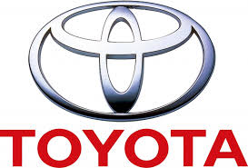

About me
Toyota Motor Corporation (TM) is the world’s largest automaker by volume. The Japanese auto industry pioneer was established in 1937. The company’s name originated from the family name of its founder, Kiichiro Toyoda.
Toyoda was the son of a successful businessman who developed an automatic loom manufacturing company in Japan. Now, let’s take a look at Toyota’s major operations.Toyota Motor Corporation’s headquarters are in Toyota City located in Aichi Prefecture, Japan. The company has seen numerous ups and downs in its nearly 80-year history. In 1957, the company entered the US market with the first export of Japanese passenger cars to the United States.
Toyota manufactures and sells vehicles and spare parts globally. Currently, the company operates its business worldwide with 53 overseas manufacturing companies in 28 countries and regions. The company’s vehicles are sold in more than 170 countries and regions.
European auto giant Volkswagen (VLKAY) and Japanese automaker Toyota were founded in 1937. However, this was much later than the foundation of other legacy automakers (XLY) such as Ford (F) in 1903 and General Motors (GM) in 1908.In 2015, Toyota ranked 11th on Forbes’s list of the world’s largest companies. This ranking was based on a composite score of the revenues, profits, assets, and market value of various companies.
Toyota is listed on multiple Japanese stock exchanges. Among these, the Tokyo Stock Exchange is the most notable exchange. In the US, the company’s ADR (American depositary receipts) trades on the New York Stock Exchange.In this series, we’ll look at a brief company history and its key geographical regions. Then we’ll analyze the company’s most recent financial figures and data, which are important factors for investors to know.
This series will help investors to become familiar with the key aspects of Toyota’ business before investing in its stock. Toward the end of the series, we’ll look at the company’s current valuation looks and the factors could drive its valuation multiples in the future
Copyright